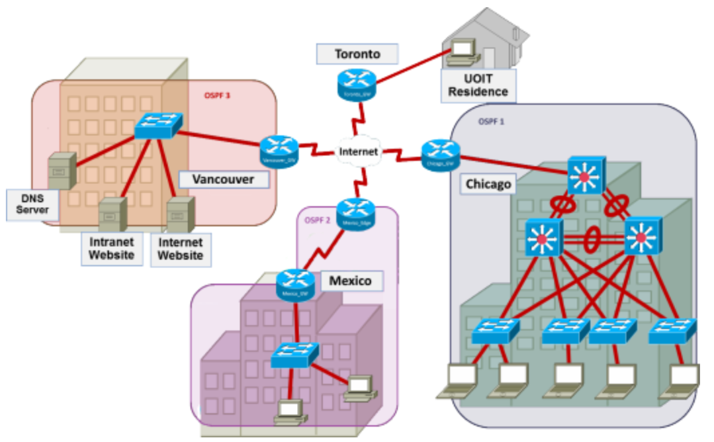
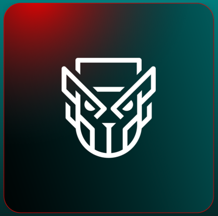

This page will be going over some previous projects that I have done in previous semesters. Each
project will have a heading and short description about it.
INFR 3610: ROS Security Issues
In INFR 3610, which is Operating System Security, I had a group project where we had to compare a topic
to the concept of ROS, what kind of issues it might have and how we would try to solve them. ROS stands for
Robot Operating System, which is a framework or design philosophy for building useful technology. For my group,
we chose to discuss how the movie character WALL-E would implement areas of ROS such as using nodes for navigation
and trash detection.
BUSI 2550: Own Home Renovation Process
In BUSI 2550, Introduction to Project Management, I had a group project where we picked a business and had
to act as though we were on the main team for that business. Our group chose to manage Own Home, which was a company
doing renovations with a specific emphasis on making the process as stress-free as possible. We had to explain who the
stakeholders were, what level of power and interest they had in the project. We also had to explain exactly what we would do
to make it easier on the home owner like creating a brochure for the neighbors explaning how long it would take, potential
noise created, and other ways. The project included doing cost estimates, timelines, and it was done in parts so it was
very thorough while not being overwhelming for us to work on.

INFR 1421: Configuring a Network for a Cryptocurrency Company
In INFR 1421, which is Networking II, there was a group project where we were given the basic visuals for a theoretical network
for a cryptocurrency mining company which had headquarters in multiple different locations across North America. We then were
given some tables with information on the minimum requirements for what the company needed, and were asked to configure the network
for various purposes. At the end, we had to give suggestions for how we could set up a method to connect to Ontario Tech's network
from the cryptocurrency one we set up. It involved concepts like VLAN, BGP, OSPF, and others that we had learned through the course
to give us a small idea of what we could be doing in our future jobs.

INFR 2600: Ember Bear Investigation
In INFR 2600, Introduction to Computer Security, we had a group project that involved researching and discussing an APT, to see
real world examples of security threats. An APT is a group that has a the goal of disrupting technological systems through various
methods, typically by breaking through security systems put in place on devices as part of a companies' protection. Our group's topic
was Ember Bear, a Russian hacking group that has been operating since 2020. They generally target government infrasturcture and are paid
by their own government to do it, usually other European governments like Ukraine. Their main goals are to gather intelligence and disrupt
compromise their target's sensitive data for the advancement of Russia's military operations. We explained things such as their methods of
attack, success rate, and why it's still important to be aware of cyber threats and learn lessons from them so we can improve our own security
for the future.